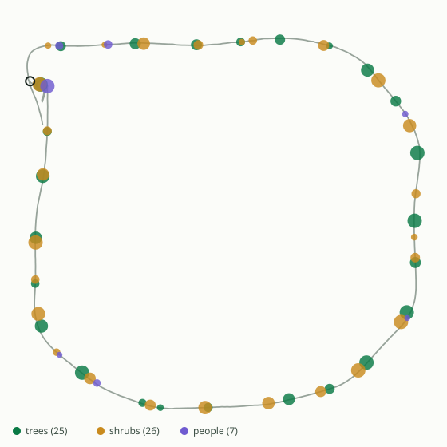
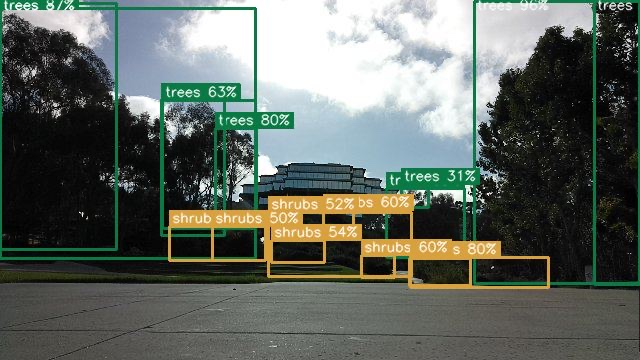
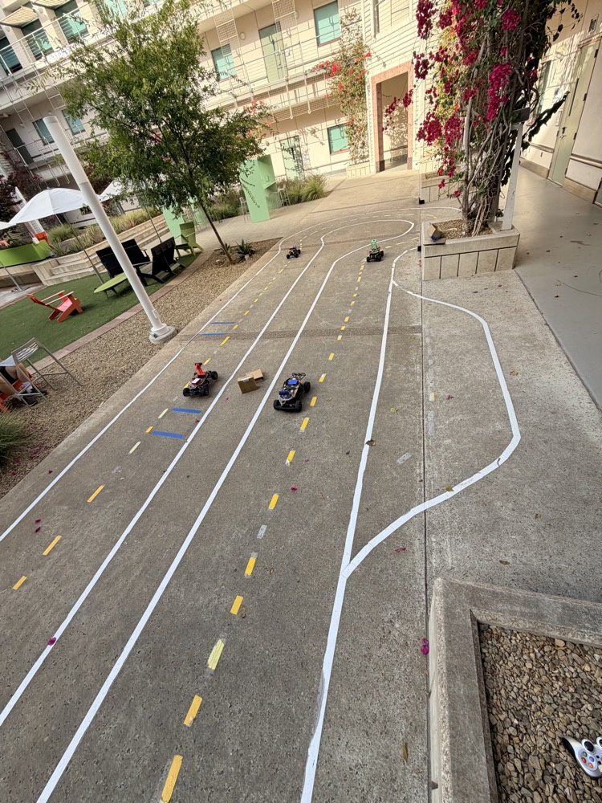

The idea
Counting vegetation across a site is slow, manual work. Somebody walks the ground with a clipboard, and the answer is only as good as their patience.
This car does the walk instead. It follows a route recorded once, holds its position to a few centimetres using corrected GPS, and identifies trees, shrubs, and people from its camera while it is moving. Every detection is stamped with where the car was standing when it fired, so the output is not just a count: it is a count placed on a map. When the loop closes, the car stops itself and writes up what it found.
The constraint that shaped everything: the thinking has to happen on the vehicle. No laptop in the loop, no cloud round trip. A survey robot that needs a network connection is not much use in the places surveys are needed.
One lap, measured
That lap found 25 trees, 26 shrubs, and 7 people. The counts are deliberately conservative: with no depth sensor, detections within three metres of each other are merged into one object, so two trees passed close together count once. The report says so on every run. A number you can trust the direction of is worth more than a number that flatters the robot.
What I built
The car is the platform. The survey system on top of it is mine, and it splits into four pieces.
A model that fits the chip
Knowledge distillation
Nobody had a labelled dataset of this campus. So a large, slow vision model labelled our own footage, and I trained a small fast one on those labels. The student runs on the accelerator; the teacher never leaves the desk.
Detection on the vehicle
26 TOPS accelerator
Compiling the model for the chip meant cutting the network before its detection head, which the compiler cannot parse, and letting the silicon decode the boxes instead. Forty times the throughput of the onboard processor.
Positioning and lap logic
RTK GPS
Corrected GPS puts the car within centimetres instead of metres. A watcher anchors on the car's own starting point and ends the run only when it has driven most of the loop and come back, so a lap cannot be called early.
The operator's view
Live dashboard
A browser page that starts the run, streams the camera with boxes drawn as they are found, counts objects as they appear, and keeps the video and the report when the car stops.
How it works
Sense
Frames land on disk tagged with the position of the car at that instant.
Detect
Each frame is classified into trees, shrubs, and people while the car keeps driving.
Understand
Nearby detections merge into distinct objects, then a language model writes the survey up.
The route below is one real lap. The grey line is where the car drove, and every dot is a merged detection placed at the position the car held when it saw it.

What went wrong
Three failures were worth more than the successes, because none of them announced themselves.
The accelerator was silently doing nothing. Every inference failed and returned an empty result, but our own hardware self-test passed the whole time because it ran under a different Python environment than the live system did. A green test is not proof; it is proof of what it tested.
Resizing the image cost more accuracy than quantising the model. Squashing frames to a square distorts them. Preserving the aspect ratio and padding instead was worth 28 percent relative accuracy, far more than anything gained by tuning the network.
Two copies of a service fought over one serial port. A watchdog restarted a wedged process without confirming the old one had died, so both held the GPS control port and neither could talk to it. Precision sat at metres instead of centimetres for a whole session. Two of something is sometimes strictly worse than none.
Tech
Gallery

